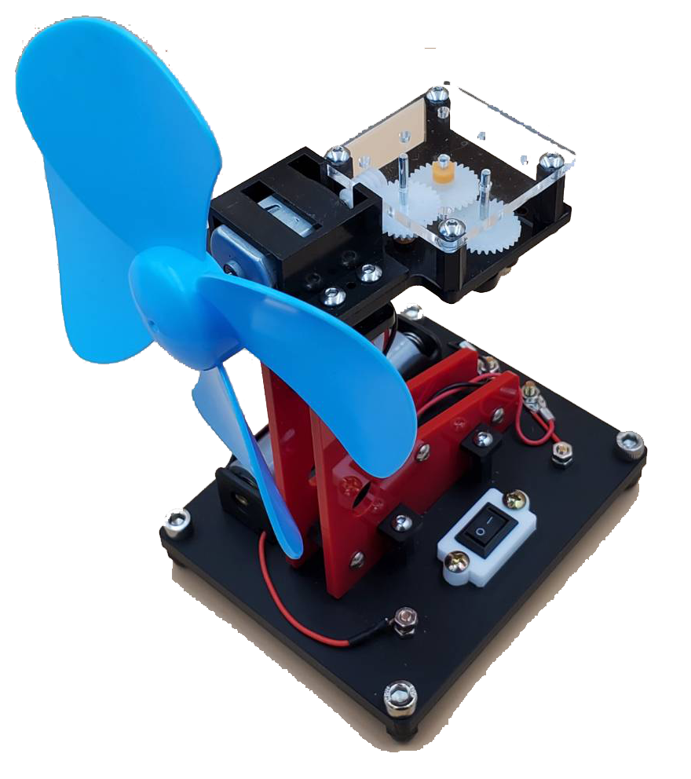
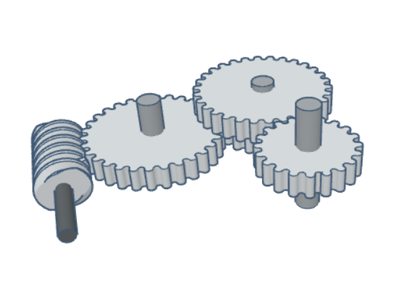
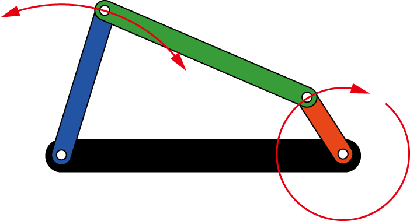
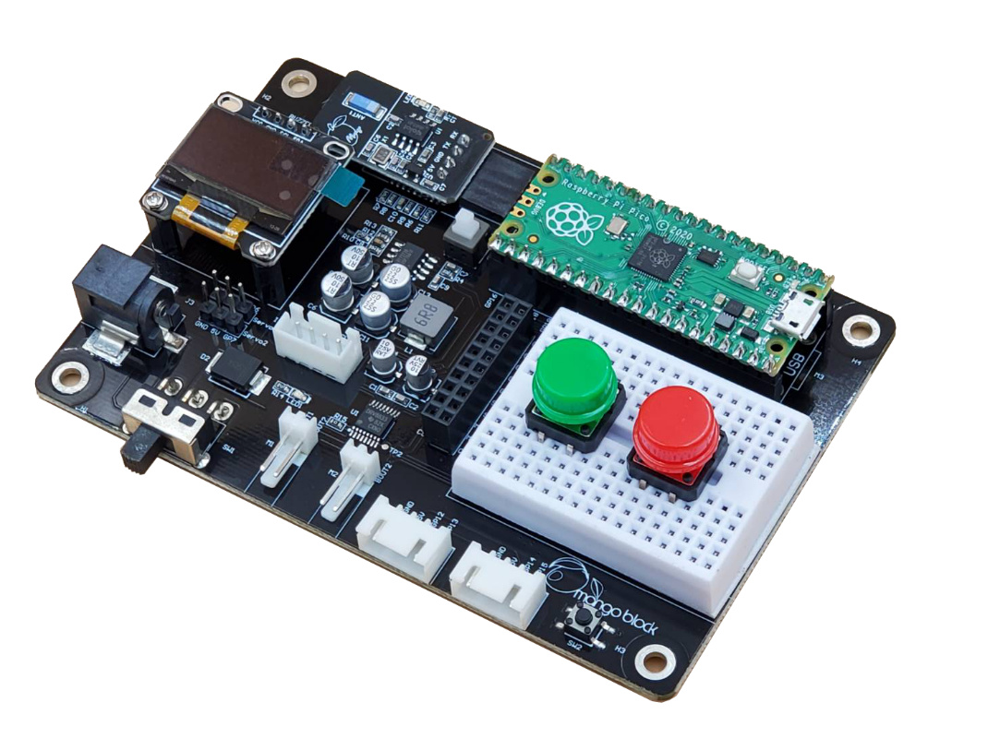
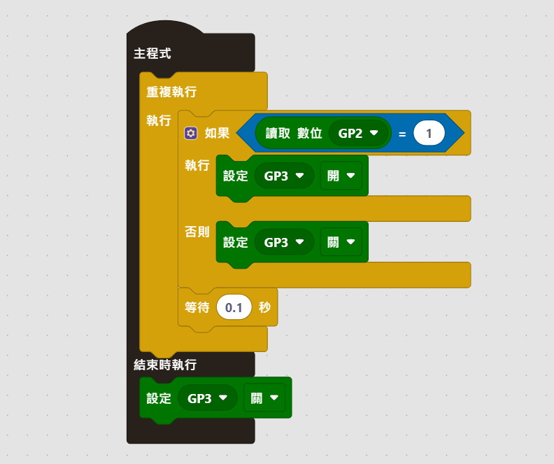

把電路板控制放進真實作品，從機構、電路到智慧控制完整整合
主題 08
本主題是延伸作品單元，使用擺頭電扇-課程簡報整理風扇機構、Pico X2 腳位與 PWM 控制應用，不屬於小車核心必修。

把電路板控制放進真實作品，從機構、電路到智慧控制完整整合
保留原教材檔案下載，同時把上課時需要先說明的概念、操作順序與關鍵程式整理成網頁版。
Before You Start
這是延伸作品主題，不是小車核心操控必修。建議學生先完成 01-05，再把控制概念移植到擺頭電扇。
File Location
擺頭電扇簡報留在電腦端教學；Pico 上只放控制馬達、伺服或 PWM 的程式。
downloads/topic-08-fan-application/
└─ fan-course-slides.pptx ← 教師授課與作品說明Raspberry Pi Pico /
├─ fan_pwm_test.py ← 先測風扇或馬達速度
├─ servo_scan.py ← 再測擺頭角度
└─ main.py ← 最終擺頭電扇作品Learning Route
這個主題是延伸作品，不是小車核心操控必修。學生會看到機構、電路、感測器與程式如何合成一件作品。
做出可以擺頭、調速、接收控制訊號的智慧型電風扇。

用蝸桿齒輪改變方向並減速，再把旋轉運動傳到連桿。

四連桿把旋轉型動力轉成左右搖擺，這是風扇擺頭的核心。
Extension Role
如果課程目標是「完整操控小車」，請先完成 01-05。08 的價值是讓學生知道同一套輸入、輸出、PWM、感測與控制流程，也可以移植到非小車作品。
Classroom Flow
先讓學生看見作品與機構，再回到板子、腳位與程式，理解「控制」如何進入作品。
先看成品與零件，討論為什麼馬達一直轉，風扇卻會左右擺。
齒輪負責改變方向與減速，連桿負責把旋轉變成搖擺。
說明馬達、舵機、蜂鳴器、感測器與 I2C/SPI/UART 等接口。
用按鈕、電位器、感測器或藍芽，把風扇變成可互動的裝置。
Pico X2 Board
以下整理自擺頭電扇課程簡報的 Pico X2 腳位頁，適合放在作品控制前講解。

簡報中特別標示電源、電機接口、感測器接口、OLED、I2C、蜂鳴器、藍芽模組與開放腳位。
| 接口 | 對應腳位 | 說明 |
|---|---|---|
| UART | GP0 / GP1 | 第一組 UART TX/RX，可用於通訊 |
| GPIO / PWM | GP2 / GP3 / GP4 | 開放式數位輸入輸出，也可做 PWM |
| ADC | GP26 / GP27 / GP28 | 類比輸入，適合電位器 |
| I2C | GP21 / GP20 | SCL / SDA 通訊介面 |
| SPI | GP18 / GP19 / GP16 / GP17 | SCLK / MOSI / MISO / CS |
| M1 / M2 | GP9 / GP8 / GP11 / GP10 | 電機接口 |
| Servo | GP6 / GP7 | 舵機或控制輸出 |
| Buzzer | GP22 | 蜂鳴器 |
| Sensor 1 / 2 | GP12 / GP13、GP14 / GP15 | 可做超音波或紅外線感測器接口 |
Control Ideas
擺頭電扇簡報中的智慧控制包含按鈕、電機轉動、調速、感測開關、訊息顯示與藍芽遙控。

先用積木看流程，再回到 Python 的變數、判斷與 PWM 輸出，學生會比較容易理解。
這是概念範例，實際接線腳位請依課程簡報與現場電路調整。
from machine import Pin, PWM
import time
# 概念範例：用 PWM 改變馬達輸出強度
# 實際腳位請依擺頭電扇簡報與電路接線調整。
fan_motor = PWM(Pin(9))
fan_motor.freq(1000)
speeds = [0, 22000, 42000, 65535]
for duty in speeds:
fan_motor.duty_u16(duty)
time.sleep(2)
fan_motor.duty_u16(0)Completion Check
這不是考試，而是讓學生知道自己是否已經準備好進入下一個主題。
我知道這是延伸作品，不是小車核心操控必修單元。
我能說明馬達、齒輪、連桿和擺頭動作的關係。
我能把 PWM 調速概念從小車延伸到風扇馬達。
我能從作品需求反推需要哪些輸入、輸出和控制流程。
Continue